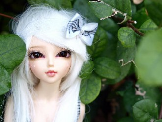

Не для тебя ли в садах наших вишниРано так начали зреть?Рано веселые звездочки вышли,Чтоб на тебя посмотреть.
Припев:Твои нежные руки, тёплые руки,И утром черное кофе с корицей,Чтобы легче дороги, и реже разлуки,
We like to partyWe like, we like to partyWe like to partyWe like, we like to partyWe like to partyWe like, we like to party
Ты появился как первый снегКак гость незваный в моей судьбеТы мое сердце прочесть сумелСвоей любовью меня согрел
Вот и опять наступает время встречи.
Сколько сказать ты успеешь в этот вечер?
Время торопит полночь, и всё обернётся.
Ровный бег моей судьбы,Ночь, печаль и плеск души,Лунный свет и майский дождьВ небесах...
(...Проигрыш...)
Нана, со хьан кIант ву
Ніч яка, господи! Місячна, зоряна:Ясно, хоч голки збирай...Вийди, коханая, працею зморена,Хоч на хвилиночку в гай!
Как пойду я на быструю речку,Сяду я да на крут бережок,Посмотрю на родную сторонку,На зеленый приветный лужок.
[як почуто]
О-о о о! О-о о о! Та визажне вирная
О-о о о! О-о о о!
Дашо нур даржа деш,Дуньен чу можа малх кхета.Седарчий цу стиглахь,Безамна шаьш къежаш хета.
Осенний Васильевский остров,Моя голубая мечта!Мосты, храма розовый остов,И стылая в речке вода.
Прекрасен в Сочи бархатный сезон –Цветы, хиты, сверкающий неон…Встречает песней Новая волна,Я в Олимпийский снова влюблена.
Игорь Крутой, звезда и шоумен,достигнув пика внутреннего дзен,мне предложил с ним прогуляться в Сочи,сегодня утром, как бы между прочим…
ищеме хайрт дуу болсоон

ॐ मणि पद्मे हूँ
Om mani padme hum
Ом мани падме хум
Do you come with me?
....
По узкой горной дороге, что вьется, как серпантин.Под месяцем одиноким я еду, как он, один.Как он, молодой да ранний, влюбленный в одну звезду,
Сегодня – для тебя цветы!Пусть с каждым годом мы и старше,Неважно! Смог построить ты,Как дивный замок, счастье наше.
Kaut kur uz pasaules šīs Trīs vītoli augaKas garām tiem gāja tos par sērīgiem saucaRudeņos tie liecās lapas kamolā vēla,